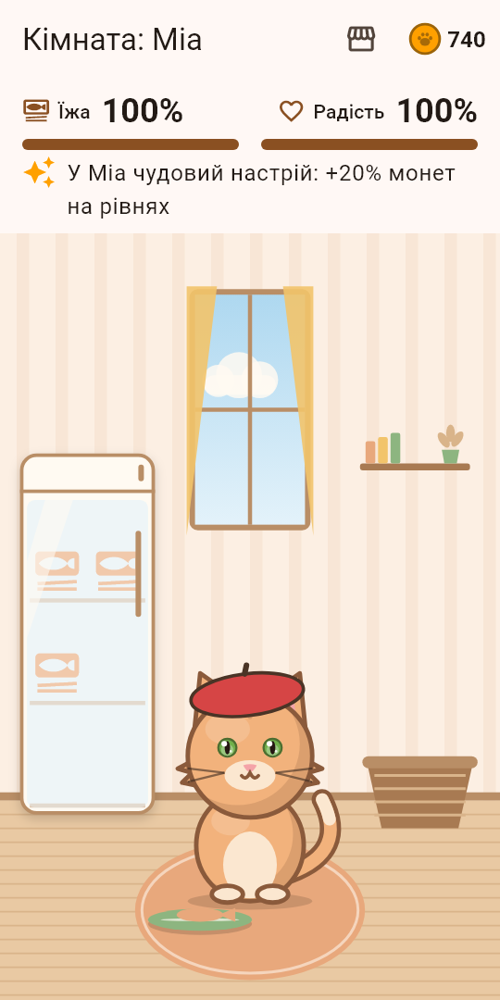
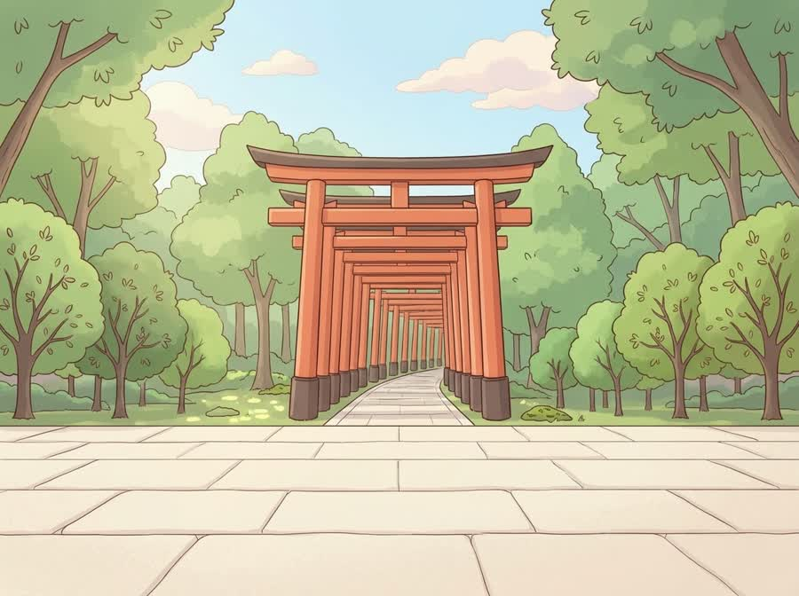
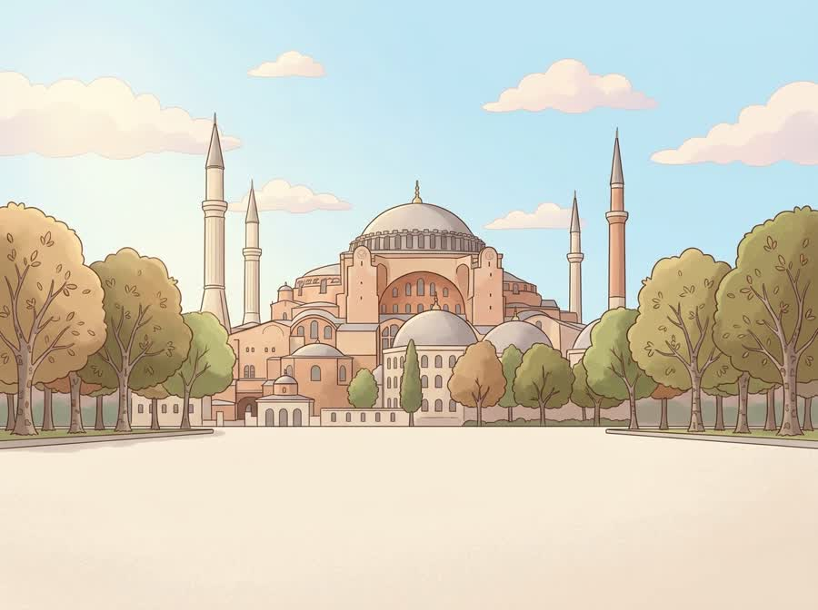
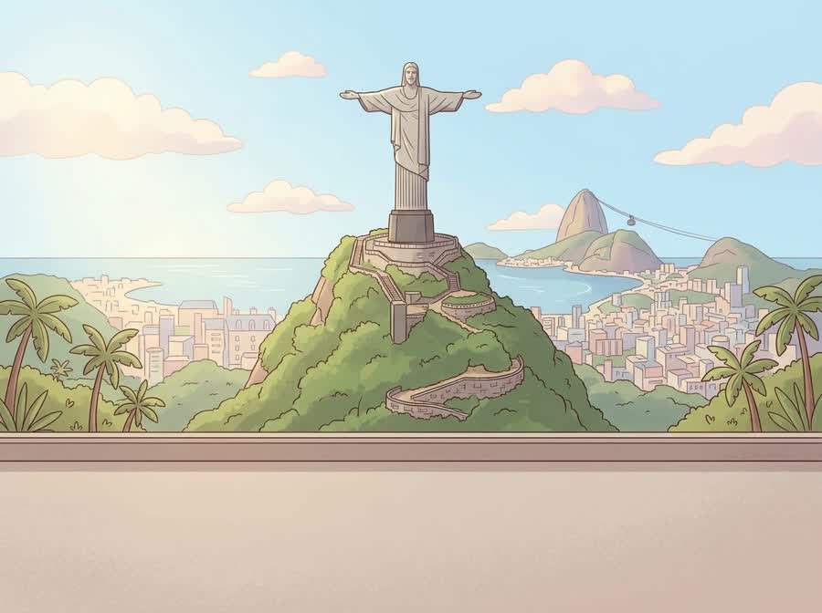

Спокійна головоломка з числами для коротких перерв
Знаходьте пари. Розвантажте голову.
Тренуйте концентрацію у вільну хвилинку, а котик підбадьорюватиме Вас.
- Безкоштовно
- Працює офлайн
- Без акаунта
Безкоштовно · Android · від 13 років
Торкніться двох чисел, які однакові або в сумі дають 10, і вони зникнуть. Очистіть усе поле, щоб виграти рівень.
Коротка перерва має бути справжньою перервою.
-
Перерва без тиску
Жодного таймера, життів чи глухих кутів. Беріть стільки часу, скільки хочете: кожне поле можна пройти, а «Додати числа» дає нові пари, коли вони закінчуються.
-
Тренування для концентрації
Помічати пари, дивитися наперед, не відволікатися: м’яка вправа для уваги. Достатньо короткої перерви, а рівні ростуть від легких до справжнього виклику.
-
Грайте будь-де, навіть офлайн
Гра повністю працює офлайн, не потребує акаунта, а Ваш прогрес зберігається на телефоні.
Якою є ця гра
-
Помилитися нестрашно
Неправильна пара? Котик пояснить чому.
Жодних життів, таймера чи штрафів. Котик пояснить, що в цьому не так.

-
Привід усміхнутися
Котик, який радий Вас бачити.
Оберіть свого котика та дайте йому ім’я. Він радітиме Вашим досягненням, а Ви доглядатимете за ним: годувати, гладити, гратися.

-
Завжди щось нове
Нова головоломка щодня і цілий світ для подорожей.
Щоденна головоломка: щодня нове випробування. І 50 міст на мапі, від Парижа до Кіото, кожне зі своєю пам’яткою та власним вбранням для котика.

Від Парижа до Кіото. 50 міст, кожне зі своєю пам’яткою.








Як грати
-
Знаходьте пари
Два однакові числа або разом 10
-
Виконайте завдання
Кожен рівень має своє завдання, за нього зірка
-
Очистіть поле
Рівень пройдено
Пар більше немає? «Додати числа» дає нові.
Корисно знати
Це справді безкоштовно?
Так. Усі рівні, щоденна головоломка і котик безкоштовні.
Потрібен інтернет?
Ні. Гра повністю працює офлайн, не потребує акаунта, а Ваш прогрес зберігається на телефоні.
Це складно?
Починається легко й ускладнюється з кожним рівнем, аж до справжнього виклику. Кожне поле можна пройти, а підказки, «Скасувати» і «Додати числа» допоможуть, коли треба.
А якщо я кілька днів не граю?
Нічого поганого. Гра на Вас чекає. Котик може трохи зголодніти, а безкоштовний смаколик працює завжди. Заморожування серії може врятувати серію після пропущеного дня.
Вона бережна до очей і батареї?
Є темна тема для вечора, а поки Ви думаєте, на екрані нічого не рухається, тож батарея економиться.
Є версія для iPhone?
Поки що ні. Cat Number Match спершу виходить для Android.
Це гра для дітей?
Гра розрахована на гравців від 13 років.